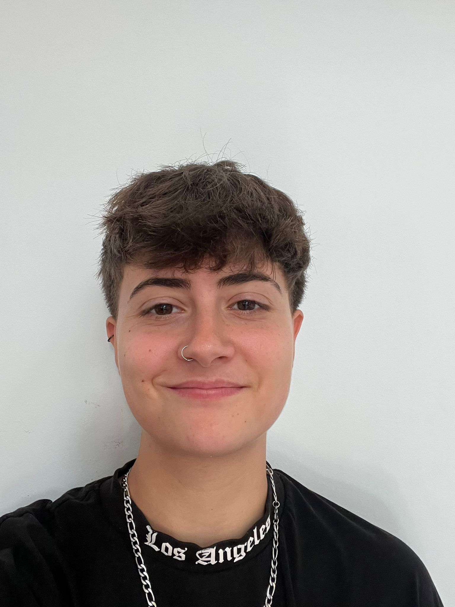

_
Desarrolladora Backend Junior. Construyendo la lógica que nadie ve, pero que lo mueve todo.
Sobre mí
Tengo 20 años y mi pasión por la tecnología empezó donde empiezan las mejores historias: rompiendo cosas. De pequeña, trasteaba con los portátiles de casa intentando exprimirles rendimiento para jugar a videojuegos más potentes (y sí, me cargué más de un ordenador en el proceso).
A los 15 años descubrí que prefería crear antes que simplemente consumir, y di mis primeros pasos en el desarrollo web. Sin embargo, pronto me di cuenta de que no me bastaba con ver resultados en pantalla; necesitaba entender cómo funcionaban las cosas por debajo. Ese afán por destripar la lógica, los datos y los engranajes del software me llevó directa a mi verdadera vocación: el desarrollo Backend.
Mi Tech Stack
En el radar (Estudiando):
Trayectoria y Formación
Desarrolladora de Software Junior
Diciembre 2025 - Presente | Factor LibreDesarrollo activo centrado en el ecosistema Odoo y en la evolución de su producto propio, Gextia. Creación y mantenimiento de módulos a medida, resolución de incidencias complejas, optimización de código (Python/PostgreSQL) y trabajo continuo con arquitecturas robustas empresariales.
Prácticas en Desarrollo Backend
Septiembre 2025 - Diciembre 2025 | Factor LibrePrimera inmersión profesional. Introducción intensiva al framework de Odoo, aprendizaje de flujos de trabajo en equipo, control de versiones (Git) y metodologías de desarrollo en un entorno de producción real.
Grado Superior en Desarrollo de Aplicaciones Multiplataforma (DAM)
2023 - 2025Formación integral en programación orientada a objetos, acceso a bases de datos relacionales, diseño de software y sistemas informáticos.
Mis Últimos Repositorios
Conectando con GitHub...